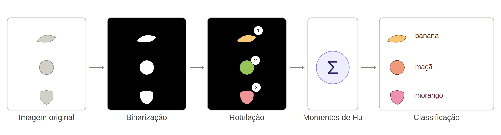
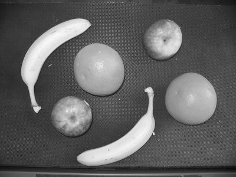
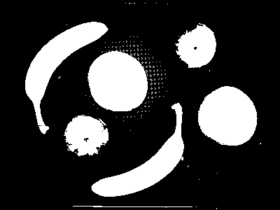
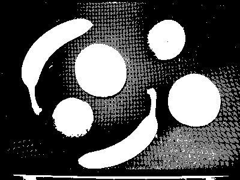
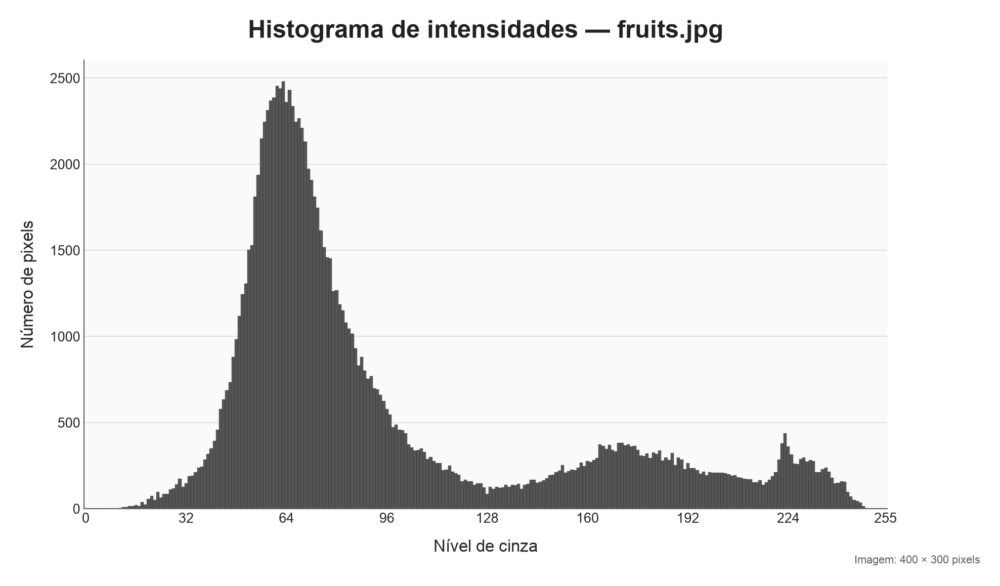
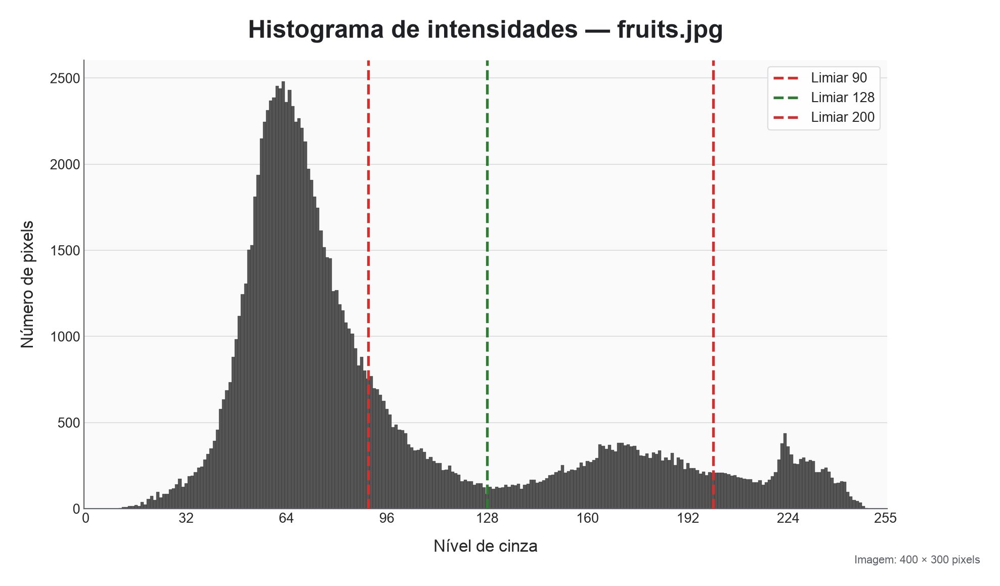
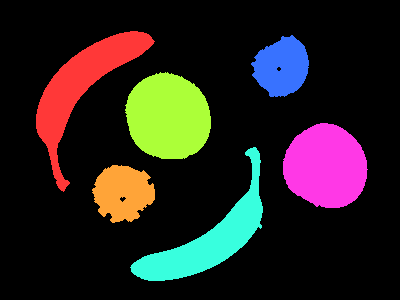
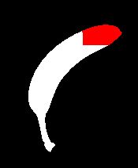

ECT/UFRN
Imagine a situação em que imagens de vários objetos de interesse são capturadas. O algoritmo deve classificar cada objeto:
Premissas:
Aplicações que realizam este processamento:

Dada uma imagem em níveis de cinza, desejamos separar os objetos (foreground) do fundo da imagem (background).
Partindo das premissas estabelecidas, podemos fazer isto por limiarização (thresholding)
Dada a imagem original I, uma imagem binária B de mesma dimensão é gerada após limiarização por:
B(x,y)= \begin{cases} 1, & I(x,y)>T \\ 0, & I(x,y)\le T \end{cases}
Ou seja, pixels acima de um limiar T recebem valor 1, e recebem 0 caso contrário.


Imagem exemplo retirada de https://sbirchfield.github.io/cvintro/
Para este exemplo:

Como determinar um valor para T?
O histograma de uma imagem fornece a quantidade de vezes que uma intensidade de pixel está nela presente:

T pode ser determinado pelo valor que divide os picos do histograma que pertencem aos objetos e que pertencem ao fundo:

O algoritmo de Otsu pode ser utilizado para determinar o valor T^* que melhor separa o histograma em duas classes C_0 e C_1.
Para um dado valor T, o algoritmo calcula:
Então, a variância entre classes
\sigma_B^2(T)=\omega_0(T)\,\omega_1(T)\,[\mu_0(T) - \mu_1(T)]^2
é calculada e em seguida o valor T^* é determinado por
T^*=\arg\max_T \; \sigma_B^2(T)
Após a limiarização, é desejável remover o ruído ainda existente:
Em imagens binárias, o pós-processamento envolve a combinação de filtros morfológicos.
Erosão:
Dilatação:
Existem ainda duas operações compostas:
Confira a bibliografia para mais informações em relação aos filtros morfológicos
O próximo passo do pipeline é considerar pixels de cor branca que são adjacentes como sendo um único grupo.
O algoritmo que realiza este processo é conhecido como segmentação.
Os grupos de pixels resultantes são denominados componentes conexos.
A partir da imagem binarizada B, a segmentação produz regiões R_1,\ldots,R_n tais que:
\bigcup_{i=1}^{n} R_i = B, \qquad R_i \cap R_j = \varnothing \quad (i\neq j)
Segmentação de forma geral:
Observe que:
Entretanto, no nosso caso:
Sendo assim, precisamos de um algoritmo que transforme a imagem binarizada B em uma imagem L contendo os componentes conexos.
Imagem binária
B(x,y)\in\{0,1\}
Indica “objeto” ou “fundo” por pixel
Imagem de rótulos
L(x,y)\in\{0,1,\ldots,K\}
Indica a qual região o pixel pertence

O algoritmo em questão:
para cada pixel p da imagem binarizada:
se p é de objeto e ainda não foi marcado:
adicione um novo rótulo a p
flood_fill(p)flood_fillO algoritmo flood_fill por sua vez funciona de forma recursiva como:
para cada vizinho q de p:
se q é pixel de objeto e ainda não foi marcado:
adicione o rótulo atual a q
flood_fill(q) Para um pixel p=(x,y):
\begin{aligned} N_4(p) &= \{(x-1,y),(x+1,y),(x,y-1),(x,y+1)\}\\ N_8(p) &= N_4(p)\cup\{(x\pm1,y\pm1)\} \end{aligned}
Algoritmo flood_fill no componente 0, com vizinhança N_8

Uma vez que a imagem L com os rótulos foi produzida, podemos utilizá-la para reconhecer classes de objetos:
Para isto, podemos calcular estatísticas sobre os componentes
…
… e então, dizer que objeto é cada componente conexo. Isto funciona, tendo como princípio a premissa 3.
Este princípio é muito utilizado em Visão Computacional: extração de características (features)
No tópico em questão, as features servem como descritores de forma (shape descriptors)
Para uma imagem em tons de cinza I(x,y), o momento de ordem (p+q) é:
m_{pq}=\sum_x\sum_y x^p y^q I(x,y)
Para p=q=0:
m_{00}=\sum_x\sum_y I(x,y)
Em uma imagem binária, cada pixel do objeto soma uma unidade. Ou seja, m_{00} é a área do componente conexo.
Podemos calcular o centróide do componente a partir dos seus momentos de 1a. ordem:
m_{10}=\sum_x\sum_y xI(x,y), \qquad m_{01}=\sum_x\sum_y yI(x,y)
\bar{x}=\frac{m_{10}}{m_{00}}, \qquad \bar{y}=\frac{m_{01}}{m_{00}}
Os momentos centrais usam coordenadas relativas ao centróide e portanto, são invariantes à translação:
\mu_{pq}=\sum_x\sum_y (x-\bar{x})^p(y-\bar{y})^q I(x,y)
Os momentos \mu_{20}, \mu_{02} e \mu_{11} descrevem a dispersão da região em torno do centróide e possuem matriz de covariância dada por:
C=\frac{1}{\mu_{00}} \begin{bmatrix} \mu_{20} & \mu_{11}\\ \mu_{11} & \mu_{02} \end{bmatrix}
Seus autovetores indicam eixos principais. Seus autovalores têm relação com os tamanhos dos eixos.
| Estatística | Figura A | Figura B |
|---|---|---|
| Área | 5.209 | 5.209 |
| \bar{x} | 81,48 | 431,48 |
| \bar{y} | 86,13 | 86,13 |
| \mu_{20} | 4.765.848,54 | 4.765.848,54 |
| \mu_{02} | 7.263.543,59 | 7.263.543,59 |
| \mu_{11} | −4.584.337,40 | −4.584.337,40 |
Para p+q\ge 2:
\eta_{pq}=\frac{\mu_{pq}}{\mu_{00}^{\,\gamma}}, \qquad \gamma=1+\frac{p+q}{2}
Esta medida é invariante à escala uniforme: a normalização compensa o crescimento dos momentos quando o objeto aumenta ou diminui de modo uniforme
| Estatística | Tamanho T1 | Tamanho T2 |
|---|---|---|
| Área | 5.209 | 1.300 |
| \bar{x} | 81,48 | 40,77 |
| \bar{y} | 86,13 | 43,01 |
| \mu_{20} | 4.765.848,54 | 298.054,77 |
| \mu_{02} | 7.263.543,59 | 450.518,94 |
| \mu_{11} | −4.584.337,40 | −286.063,92 |
| \eta_{20} | 0,18 | 0,18 |
| \eta_{02} | 0,27 | 0,27 |
| \eta_{11} | −0,17 | −0,17 |
Para obter uma medida robusta a ruídos e invariância à rotações, Hu propôs sete valores:
\begin{aligned} \phi_1 &=\eta_{20}+\eta_{02} \\ \phi_2 &=(\eta_{20}-\eta_{02})^2+4\eta_{11}^2\\ \phi_3 &=(\eta_{30}-3\eta_{12})^2+(3\eta_{21}-\eta_{03})^2\\ \phi_4 &=(\eta_{30}+\eta_{12})^2+(\eta_{21}+\eta_{03})^2\\ \end{aligned}
… (consulte a bibliografia para os outros 3 valores)
| Momento | Invariância |
|---|---|
| m_{pq} | nenhuma em geral |
| \mu_{pq} | translação |
| \eta_{pq} | translação e escala uniforme |
| Momentos de Hu | translação, escala uniforme e rotação |
Representando cada objeto por:
\mathbf{h}=[\phi_1,\phi_2,\ldots,\phi_7]^T
Podemos utilizar medidas de distância para comparar objetos:
d(\mathbf{h}^{(a)},\mathbf{h}^{(b)})= \left\|\mathbf{h}^{(a)}-\mathbf{h}^{(b)}\right\|_2
Então, podemos calcular o vetor \mathbf{h_c} para imagens base de cada classe \mathbf{c} e então achar o vetor da classe mais próximo a um vetor \mathbf{h_k} de um componente conexo qualquer.
Funções da OpenCV relacionadas ao tópico da aula:
cv2.thresholdcv2.adaptiveThresholdcv2.findContourscv2.connectedComponentscv2.erodecv2.dilatecv2.momentscv2.HuMomentsNesta aula:
Visão Robótica - PPGEMECA/UFRN